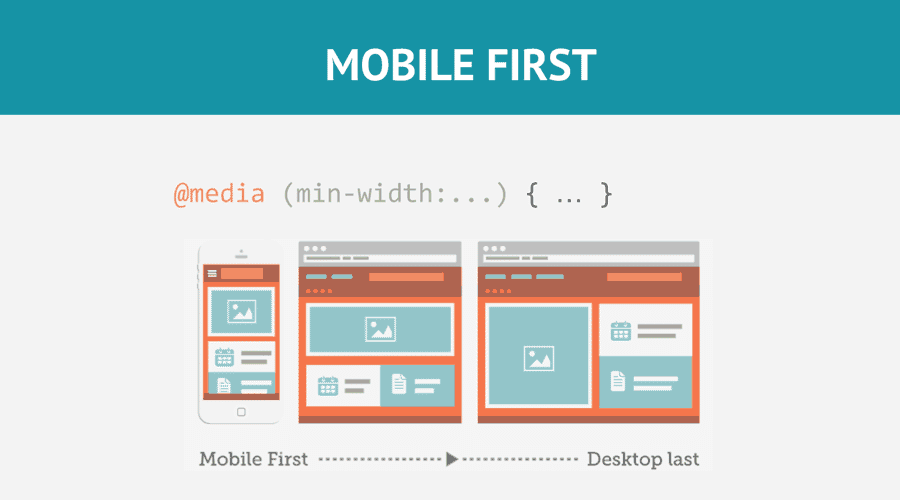

Responsive Web Design
Cada vez es más frecuente acceder a Internet con diferentes tipos de dispositivos, que a su vez tienen diferentes pantallas y resoluciones, con distintos tamaños y formas, que hacen que se consuman las páginas webs de formas diferentes, apareciendo por el camino también diferentes necesidades, problemas y soluciones.
Hoy en día se le denomina Responsive Web Design (o RWD) a los diseños web que tienen la capacidad de adaptarse al tamaño y formato de la pantalla en la que se visualiza el contenido, respecto a los diseños tradicionales en los que las páginas web estaban diseñadas sólo para un tamaño o formato específico, y no tenían esa capacidad de adaptación.
First Mobile
Qué es el mobile first
El mobile first es un enfoque de diseño y desarrollo web que se centra en la creación de una experiencia óptima para dispositivos móviles. Su objetivo principal es priorizar la optimización de la navegación a través de un sitio web o aplicación en estos dispositivos. Además, este concepto reconoce que los usuarios móviles representan una gran parte de la audiencia en línea, por lo que es esencial darles una buena experiencia desde el principio. Sin embargo, esto no quiere decir que se descuide la versión de escritorio, sino que esta se aborda después de haber diseñado la móvil.  Este tipo de diseño sigue estos principios básicos:
- Diseño responsivo: planifica el diseño de la interfaz y la disposición de los elementos para su despliegue en dispositivos móviles. Esto implica la adaptación de su estructura para tamaños de pantalla más pequeños y para diferentes orientaciones.
- Carga rápida: presta especial atención a la velocidad de carga en este tipo de dispositivos, ya que las conexiones pueden ser más lentas que las de banda ancha. Para ello, busca optimizar las imágenes y minimizar las solicitudes de servidor para acelerar la carga.
- Contenido prioritario: favorece el contenido más importante y relevante para los usuarios móviles. Esto implica simplificar la navegación y enfocarse en lo esencial para evitar la sobrecarga de información en pantallas pequeñas.
- Interacción táctil: tiene en cuenta la navegación basada en gestos y la interacción táctil, en lugar de depender del puntero del ratón. Para esto, los elementos interactivos se hacen más grandes y fáciles de tocar.
- Pruebas en dispositivos móviles: realiza verificaciones exhaustivas en una variedad de dispositivos móviles y navegadores para garantizar que la experiencia del usuario sea consistente y de alta calidad en todos ellos.
¿Por qué es importante el Mobile First?
El concepto fue creado en 2011 por Luke Wroblewski, director de producto de Google, cuando publicó su libro “Mobile First” como propuesta para crear un sitio web diseñado primero en móviles y después adaptado al ordenador.
Pero, ¿qué es exactamente el Mobile First? Esta metodología se centra en diseñar primero pensando en el móvil, y después ya se creará el resto de diseños en la tablet, ordenador y otros dispositivos.
La razón por la que es una tendencia es porque actualmente, y desde hace bastante tiempo, el móvil es el principal dispositivo de acceso a Internet. Por lo tanto, es esencial diseñar para los dispositivos móviles desde el principio y después adaptarlos a los demás para que la experiencia de usuario sea excelente.
Ventajas del Mobile First
La popularidad del Mobile First no es casualidad, así lo demuestran las numerosas ventajas que ofrece. Estas son algunas de las principales:
- Incrementa la visibilidad. El Mobile First permite construir un sitio web diseñado especialmente para los móviles, lo que aumente la visibilidad de la empresa, permitiendo un aumento en la captación de leads.
- Potencia la creatividad. Las limitaciones que tienen los móviles provocan una mayor creatividad en los diseñadores web. Esto se debe a que el tamaño reducido de la pantalla hace que sea necesario buscar soluciones más innovadoras para mejorar la experiencia de usuario.
- Mayor facilidad para adaptar al ordenador. El esfuerzo para adaptar el diseño de una web de móvil a una de ordenador es mucho menor que al contrario.
- Mejor posicionamiento. Google coloca en mejores posiciones a las páginas que ofrecen una mejor experiencia de usuario en dispositivos móviles. Y esto está asegurado en Mobile First.
La estrategia Mobile-first es la que utilizan los diseñadores de sitios webs en las que su público objetivo es mayoritariamente usuario de móvil.
Esta estrategia hace que el desarrollo en escritorio sea muy sencillo, ya que se reduce a tener un diseño de móvil en escritorio e ir añadiendo nuevas secciones o partes para «completar» el diseño en resoluciones grandes.
Media Queries
Las media queries son reglas en CSS que permiten aplicar estilos específicos a una página web dependiendo de ciertas características del dispositivo que la visualiza. Son una herramienta fundamental para el diseño responsive, ya que permiten adaptar el diseño de un sitio para que funcione y se vea bien en dispositivos de diferentes tamaños (móviles, tablets, laptops, y monitores grandes).
¿Cómo funcionan las media queries?
Las media queries detectan características como el ancho y la altura de la pantalla, la resolución, la orientación (horizontal o vertical), y aplican diferentes estilos CSS en función de estas condiciones. Es muy útil para poder cambiar la orientación de un móvil o una tablet y que la web responda y se recoloque de manera que sea más sencillo interactuar con ella.

Ejemplo básico
Imagina que tienes un diseño web que quieres que se vea de una forma en pantallas grandes y de otra en pantallas pequeñas. Usarías media queries para cambiar los estilos según el ancho de la pantalla.
/* Estilos básicos que se aplican a todos los tamaños de pantalla */
body {
font-size: 16px;
background-color: white;
}
/* Media query para pantallas de 768px o menos */
@media (max-width: 768px) {
body {
font-size: 14px; /* Reduce el tamaño de fuente en pantallas pequeñas */
background-color: lightgray; /* Cambia el color de fondo */
}
}
Principales tipos de media queries
Algunos de los tipos de media queries más usados:
max-width: Aplica estilos cuando el ancho de la pantalla es igual o menor al valor especificado.
@media (max-width: 768px) {
/* Estilos para pantallas de hasta 768px de ancho */
/* estilos aquí */
}
min-width:Aplica estilos cuando el ancho de la pantalla es igual o mayor al valor especificado.
@media (min-width: 1024px) {
/* Estilos para pantallas de al menos 1024px de ancho */
/* estilos aquí */
}
min-height y max-height:Se usan para ajustar el diseño en función de la altura de la pantalla, lo cual puede ser útil en dispositivos como tablets en modo horizontal y vertical.
@media (min-height: 600px) {
/* estilos aquí */
}
min-height y max-height:Se usan para ajustar el diseño en función de la altura de la pantalla, lo cual puede ser útil en dispositivos como tablets en modo horizontal y vertical.
@media (min-height: 600px) {
/* estilos aquí */
}
orientation: Permite detectar si el dispositivo está en modo horizontal (landscape) o vertical (portrait).
@media (orientation: landscape) {
/* Estilos para orientación horizontal */
/* estilos aquí */
}
aspect-ratio:Define los estilos según la relación de aspecto de la pantalla.
@media (aspect-ratio: 16/9) {
/* Estilos para pantallas con relación 16:9 */
/* estilos aquí */
}
Ejemplo Avanzado de Media Queries
Supongamos que queremos ajustar el diseño de un sitio para que tenga tres diseños diferentes: uno para móviles, otro para tablets y otro para pantallas de escritorio.
/* Estilos para móviles (pantallas de hasta 600px) */
@media (max-width: 600px) {
body {
font-size: 14px;
background-color: lightblue;
}
}
/* Estilos para tablets (pantallas de 601px a 1024px) */
@media (min-width: 601px) and (max-width: 1024px) {
body {
font-size: 16px;
background-color: lightgreen;
}
}
/* Estilos para pantallas de escritorio (más de 1024px) */
@media (min-width: 1025px) {
body {
font-size: 18px;
background-color: lightcoral;
}
}
Ventajas de las media queries
- Personalización: Permiten personalizar la experiencia de usuario para cada dispositivo.
- Flexibilidad: Los estilos cambian en función de la pantalla, haciendo que el diseño sea adaptable.
- Eficiencia: Los usuarios ven solo los estilos que necesitan, lo que puede mejorar el rendimiento en dispositivos más lentos.
Buenas prácticas
- Mobile First: Diseñar primero para pantallas pequeñas y luego agregar media queries para pantallas más grandes usando min-width.
- Simplificar media queries: Evitar crear media queries muy específicas que puedan complicar el mantenimiento del código.
- Testear en diferentes dispositivos: Es importante probar los diseños en dispositivos reales para asegurarse de que las media queries funcionen como se espera.